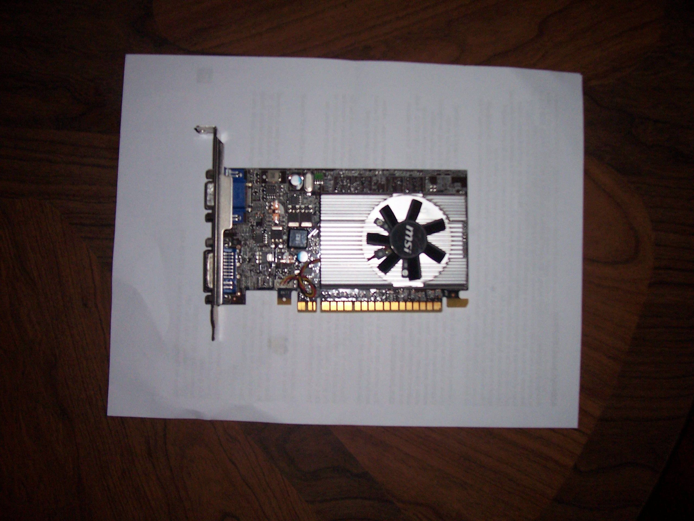
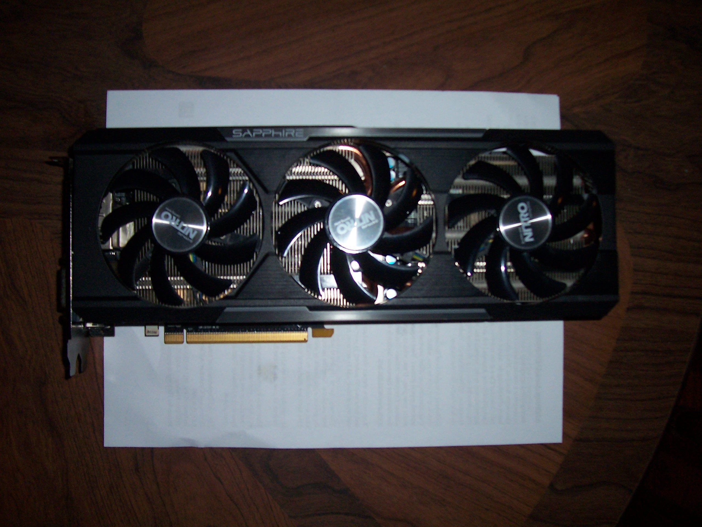
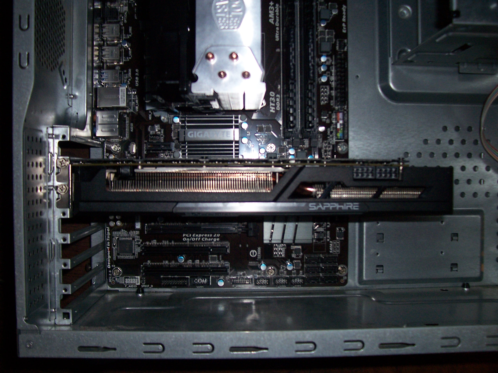
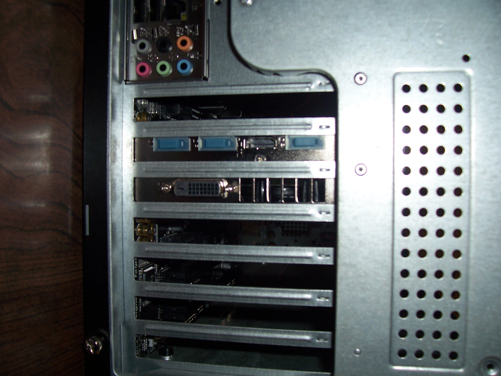

Although a rather unimportant part for most computing tasks, many people who build their own computers are gamers who place great emphasis on their graphics card. A sort of computer inside a computer, a graphics card has its own CPU of sorts, called a GPU (graphics processing unit), and its own large pool of super fast ram. It connects with the rest of the computer through the pci-express 16X slot.
Since, depending on which processor and motherboard you chose, you might not even be installing an independent graphics card, you might wish to go ahead and skip this step. Otherwise, lets jump right in.
First, lets take a look at a regular, everyday, inexpensive graphics card designed simply to output whatever is needed to the monitor.

Now lets look at a modern graphics card designed for gaming or very heavy rendering loads.

The gold colored connectors are the same size on both cards, and both are on the same sheet of paper. That should give you an idea about the absurd sizes graphics cards can reach. If you're going to install one of these cards, be sure to look up its dimensions and make sure it will fit in your case. Also consider the enormous power requirements of such cards, and factor this into you pus decision as well.
We could install either card, but the larger one is much more tricky, so lets install it for this demonstration. At the bottom of the card is the pci-express 16X connector. At the top, not visible in this picture, are the pci-express power plugs needed to power the card. You won't have any trouble locating the corresponding slot on your motherboard, there will likely be only one, and the only thing that plugs into pci-express 16X slots is graphics cards (so far). Installation is as simply as linking up the card with its slot and pushing it in until it clicks.

Here is the view of the graphics card installed in its slot on the motherboard. Note the two screws on the far left that attach the graphics card to the case. These are important for supporting the large weight of the card and preventing the connector or slot from breaking , so don't forget them!
On the far right of the card, you can now see the twin pci-express power connectors. These deliver around 150 watts apiece, in addition to the 75 watts the motherboard itself can supply. Do the math and that's right around the actual power draw of this card during heavy use: 375 watts! This is more than the entire rest of the computer will use, even during heavy loads. Just food for thought.

Here's a view of the back of the case with card installed. Notice that it takes up two slots and features a variety of connectors for monitors and televisions.
Now its time for the last piece of the puzzle. If your ready, lets move on to the hard drive.
Homemade Logic
Matthew Buchanan